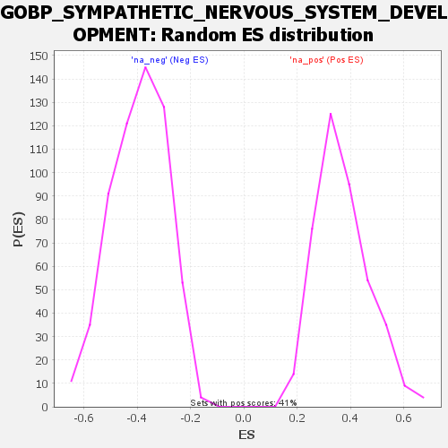

| | | Dataset | wbh_treatment_res_for_gsea |
| Phenotype | NoPhenotypeAvailable |
| Upregulated in class | na_neg |
| GeneSet | GOBP_SYMPATHETIC_NERVOUS_SYSTEM_DEVELOPMENT |
| Enrichment Score (ES) | -0.7436389 |
| Normalized Enrichment Score (NES) | -1.8897756 |
| Nominal p-value | 0.0 |
| FDR q-value | 0.2660324 |
| FWER p-Value | 0.263 |
Table: GSEA Results Summary
Fig 1: Enrichment plot: GOBP_SYMPATHETIC_NERVOUS_SYSTEM_DEVELOPMENT
Profile of the Running ES Score & Positions of GeneSet Members on the Rank Ordered List
| SYMBOL | RANK IN GENE LIST | RANK METRIC SCORE | RUNNING ES | CORE ENRICHMENT | | 1 | SEMA3A | 4500 | 0.837 | -0.1487 | No |
| 2 | CTNNB1 | 5953 | 0.542 | -0.1899 | No |
| 3 | TP63 | 6025 | 0.529 | -0.1795 | No |
| 4 | NF1 | 9869 | 0.078 | -0.3222 | No |
| 5 | NTRK1 | 15368 | -0.289 | -0.5219 | No |
| 6 | FZD3 | 19327 | -0.701 | -0.6536 | No |
| 7 | ASCL1 | 19874 | -0.785 | -0.6548 | No |
| 8 | GFRA3 | 21086 | -1.003 | -0.6756 | No |
| 9 | TFAP2B | 22896 | -1.458 | -0.7077 | Yes |
| 10 | SEMA3F | 23109 | -1.520 | -0.6781 | Yes |
| 11 | EDNRA | 23414 | -1.638 | -0.6492 | Yes |
| 12 | PHOX2A | 23944 | -1.847 | -0.6235 | Yes |
| 13 | SOX4 | 23964 | -1.858 | -0.5784 | Yes |
| 14 | GATA3 | 24240 | -1.997 | -0.5394 | Yes |
| 15 | PLXNA4 | 24290 | -2.031 | -0.4911 | Yes |
| 16 | NRP2 | 25486 | -2.868 | -0.4653 | Yes |
| 17 | GDNF | 25693 | -3.109 | -0.3964 | Yes |
| 18 | INSM1 | 26288 | -4.503 | -0.3076 | Yes |
| 19 | SOX11 | 26517 | -6.283 | -0.1611 | Yes |
| 20 | NRP1 | 26534 | -6.648 | 0.0023 | Yes |
Table: GSEA details [plain text format]

Fig 2: GOBP_SYMPATHETIC_NERVOUS_SYSTEM_DEVELOPMENT: Random ES distribution
Gene set null distribution of ES for GOBP_SYMPATHETIC_NERVOUS_SYSTEM_DEVELOPMENT